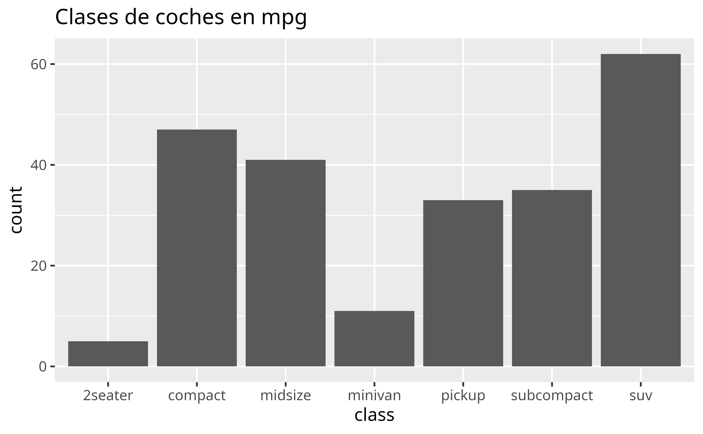
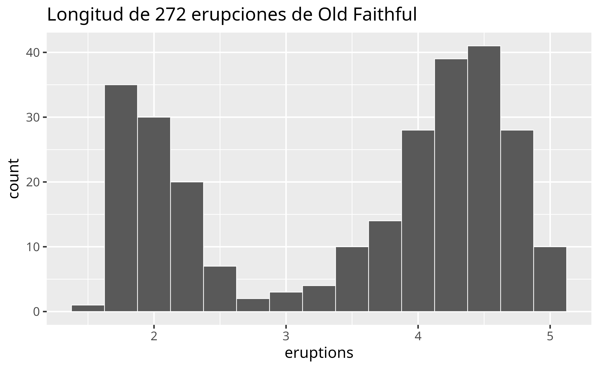
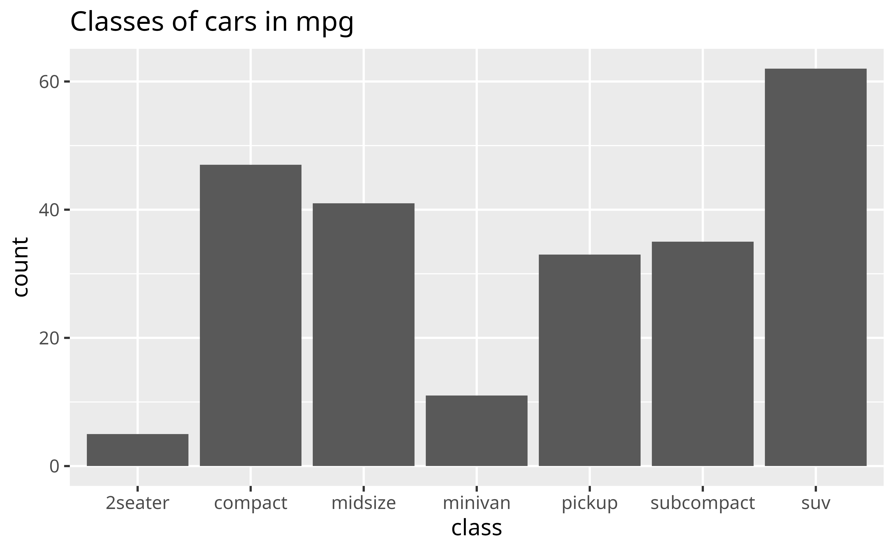

Variation
¿Qué es la variación?
La variación es la tendencia de los valores a cambiar de medición en medición. Puedes ver variación muy fácilmente en la vida real: si mides cualquier variable continua dos veces, y de manera muy precisa, obtendrás dos resultados diferentes. Esto es cierto incluso si mides cantidades que son constantes, como la velocidad de la luz. Cada una de tus mediciones incluye una pequeña cantidad de error que varía de medición a medición. Las variables categóricas también pueden variar si las mides a lo largo de diferentes objetos (por ejemplo, el color de los ojos de diferentes personas) o en diferentes momentos (por ejemplo, los niveles de energía de un electrón en diferentes momentos).
Cada variable tiene sus propios patrones de variación, que pueden revelarnos informacion útil. La mejor manera de entender un patrón es visualizar la distribución de los valores de la variable. Cómo visualizar la distribución de una variable dependerá de si la variable es categórica o continua.
Variables categóricas
Una variable es categórica si sólo puede tomar uno de un pequeño conjunto de valores. En R, las variables categóricas suelen guardarse como factores o vectores de texto. Puede visualizar la distribución de una variable categórica con un gráfico de barras, como el siguiente.
No te preocupes si no sabes hacer o interpretar un gráfico de barras. Estudiaremos varios tipos de gráficos en este tutorial, al mismo tiempo que creamos una estrategia para el EDA. Aprenderás a construir cada tipo de gráfico en los tutoriales siguientes.
Variables continuas
Una variable es continua si puede tomar cualquiera de un conjunto infinito de valores suaves y ordenados. Aquí, suave significa que si ordenas los valores en una línea, existiría un número infinito de valores entre dos puntos cualesquiera de la línea. Por ejemplo, existe un número infinito de valores entre 0 y 1, por ejemplo, 0,9, 0,99, 0,999, etc.
Los números y las fechas y horas son dos ejemplos de variables continuas. Puedes visualizar la distribución de una variable continua con un histograma, como el que se muestra a continuación:

Frecuencias
Tanto en los gráficos de barras como en los histogramas, las barras altas representan los valores más comunes de una variable, es decir, los valores que aparecen con mayor frecuencia. Las barras más cortas representan valores menos comunes, es decir, valores que aparecen con menos frecuencia. Los lugares que no tienen barras revelan valores que no se observan en tus datos. Para convertir esta información en preguntas útiles, intenta identificar cualquier cosa inesperada:
- ¿Qué valores son los más comunes? ¿Por qué?
- ¿Qué valores son poco habituales? ¿Encaja esto con tus expectativas?
- ¿Puedes ver algún patrón extraño? ¿Qué podría explicarlos, si los ves?
- ¿Hay algún valor atípico (outlier, en inglés), que son puntos que no encajan en el patrón o aparecen muy alejados del resto de los datos? ¿Son resultado de algún error en la introducción o registro de datos, o se deben a algún otro motivo?
Muchas de estas preguntas te llevarán a explorar relaciones entre variables, para comprobar si los valores de una variable pueden explicar los valores de otra variable. Llegaremos a esto en seguida.
Repaso 4: Frecuencias
The bar chart below visualizes the distribution of the class variable in the mpg data set, which comes in the {ggplot2} package. The height of the bars reveal how many cars in the data set come from each class.

Does the distribution of cars in the mpg dataset seem to reflect the distribution of cars that you see on the road? Would your answer shape how you use this data?
Clusters
For continuous variables, clusters of similar values suggest that subgroups exist in your data. To understand the subgroups, ask:
How are the observations within each cluster similar to each other?
How are the observations in separate clusters different from each other?
How can you explain or describe the clusters?
Why might the appearance of clusters be misleading?
Review 5: Clusters
The histogram below shows the distribution of the eruptions variable in the faithful data set, which comes with R. eruptions shows the lengths (in minutes) of 272 eruptions of the Old Faithful geyser in Yellowstone National Park.
To interpret the histogram, look first at the x axis, which displays the lengths of eruptions recorded in the data. The range of the x axis shows that the shortest eruptions lasted for about one minute and the longest for about five minutes.
To see how many eruptions lasted for a specific length of time, find the length of time on the x axis and then look at the height of the bar above the length of time. For example, according to the histogram, 30 eruptions lasted for about two minutes, but only three lasted for about three minutes (the height of the bar above two is 30, the height of the bar above three is three).